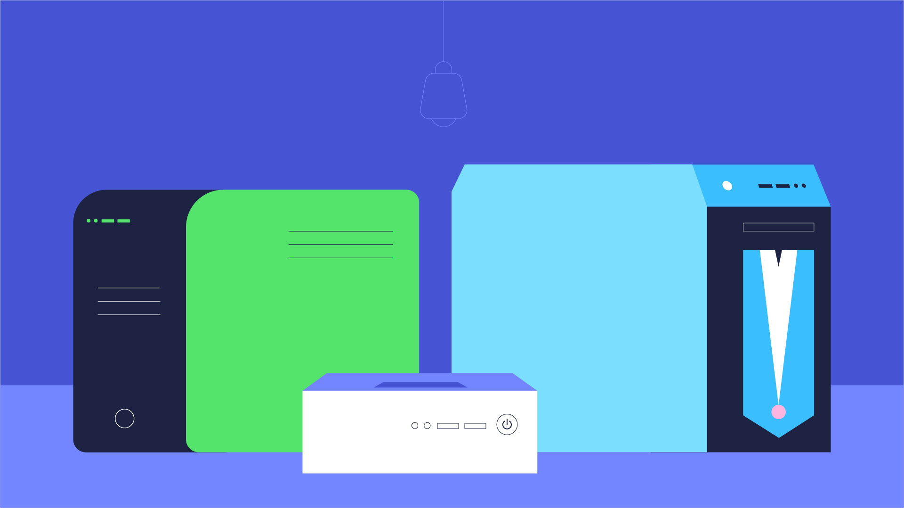
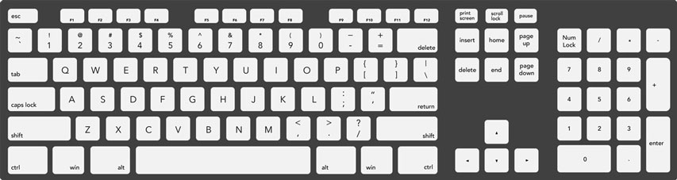
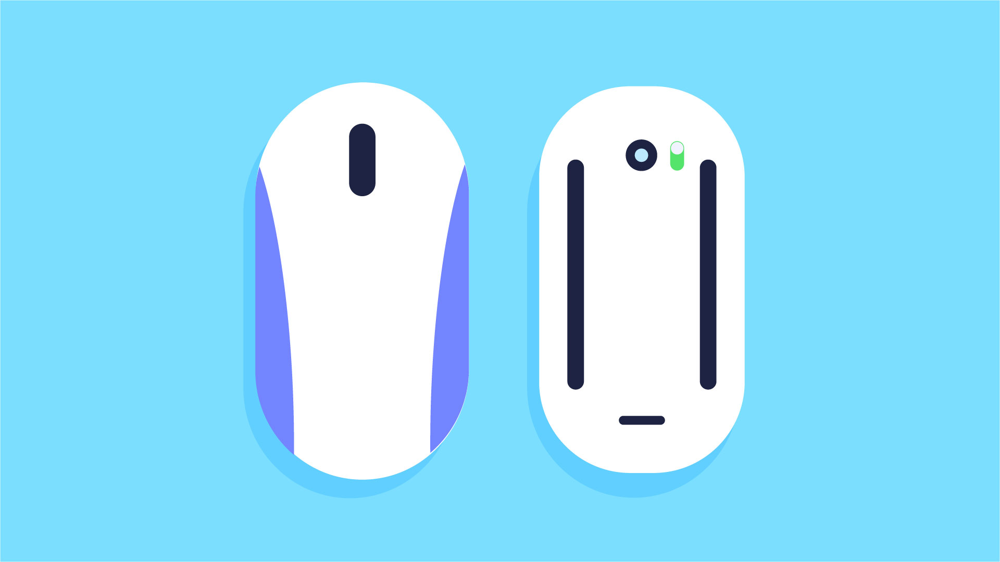
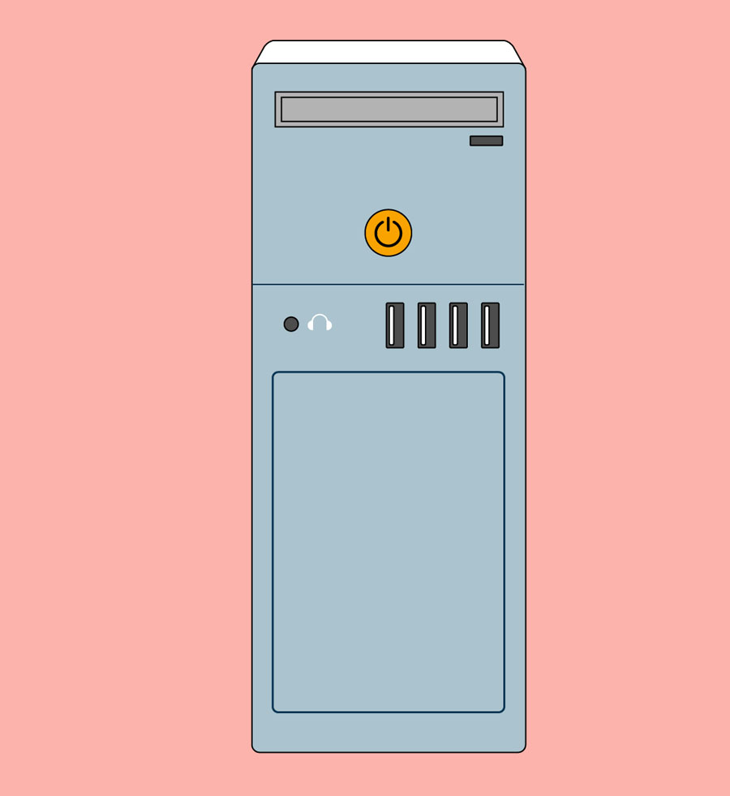
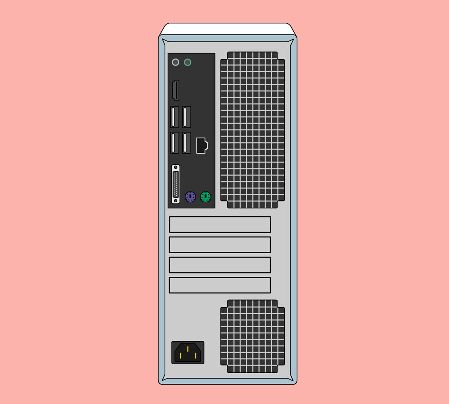
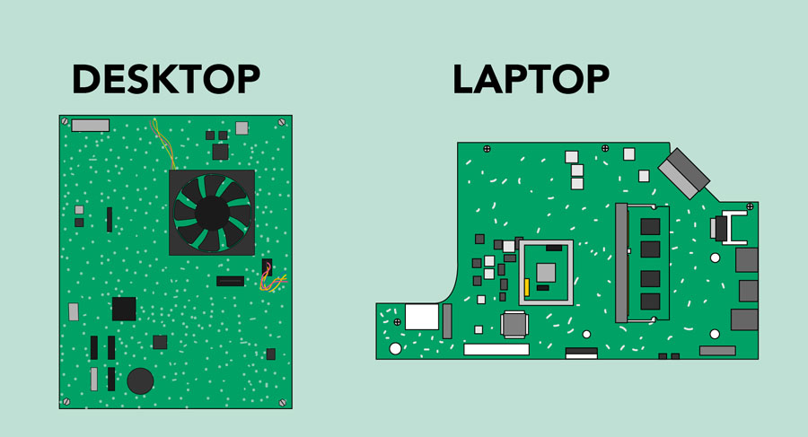
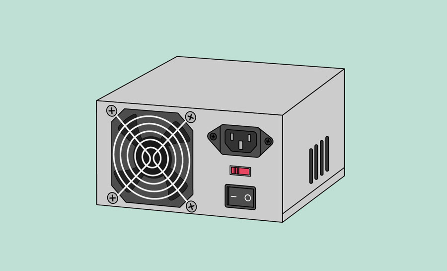
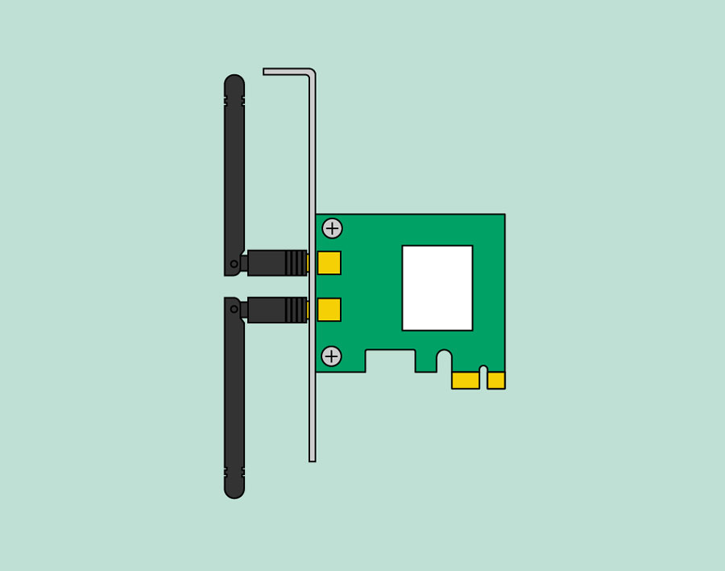

Computer Basics: Basic Parts of a Computer
Introduction
The basic parts of a desktop computer are the computer case, monitor, keyboard, mouse, and power cord. Each part plays an important role whenever you use a computer.
Computer case
The computer case is the metal and plastic box that contains the main components of the computer, including the motherboard, central processing unit (CPU), and power supply. The front of the case usually has an On/Off button and one or more optical drives.
Computer cases come in different shapes and sizes. A desktop case lies flat on a desk, and the monitor usually sits on top of it. A tower case is tall and sits next to the monitor or on the floor. All-in-one computers come with the internal components built into the monitor, which eliminates the need for a separate case.
Monitor
The monitor works with a video card, located inside the computer case, to display images and text on the screen. Most monitors have control buttons that allow you to change your monitor's display settings, and some monitors also have built-in speakers.
Newer monitors usually have LCD (liquid crystal display) or LED (light-emitting diode) displays. These can be made very thin, and they are often called flat-panel displays. Older monitors use CRT (cathode ray tube) displays. CRT monitors are much larger and heavier, and they take up more desk space.
Keyboard
The keyboard is one of the main ways to communicate with a computer. There are many different types of keyboards, but most are very similar and allow you to accomplish the same basic tasks.
Mouse
The mouse is another important tool for communicating with computers. Commonly known as a pointing device , it lets you point to objects on the screen, click on them, and move them.
There are two main mouse types: optical and mechanical. The optical mouse uses an electronic eye to detect movement and is easier to clean. The mechanical mouse uses a rolling ball to detect movement and requires regular cleaning to work properly.
Mouse alternatives
There are other devices that can do the same thing as a mouse. Many people find them easier to use, and they also require less desk space than a traditional mouse. The most common mouse alternatives are below.
> Trackball: A trackball has a ball that can rotate freely. Instead of moving the device like a mouse, you can roll the ball with your thumb to move the pointer.
> Touchpad: A touchpad—also called a trackpad—is a touch-sensitive pad that lets you control the pointer by making a drawing motion with your finger. Touchpads are common on laptop computers.
Computer Basics: Buttons and Ports on a Computer
Introduction
Take a look at the front and back of your computer case and count the number of buttons, ports, and slots you see. Now look at your monitor and count any you find there. You probably counted at least 10, and maybe a lot more.
Each computer is different, so the buttons, ports, and sockets will vary from computer to computer. However, there are certain ones you can expect to find on most desktop computers. Learning how these ports are used will help whenever you need to connect something to your computer, like a new printer, keyboard, or mouse.
Front of a computer case
Optical Disc Drive
Often called a CD-ROM or DVD-ROM drive, this lets your computer read CDs and DVDs.
Power Button
The power button is used to power the computer on and off.
Audio In/Audio Out
Many computers include audio ports on the front of the computer case that allow you to easily connect speakers,microphones, and headsets without fumbling with the back of the computer.
USB (Universal Serial Bus) Port
Most desktop computers have several USB ports . These can be used to connect almost any type of device, including mice, keyboards, printers, and digital cameras. They will often appear on the front and back of the computer.
Back of a computer case
The back of a computer case has connection ports that are made to fit specific devices. The placement will vary from computer to computer, and many companies have their own special connectors for specific devices. Some of the ports may be color coded to help you determine which port is used with a particular device.
Audio In/Audio Out
Almost every computer has two or more audio ports where you can connect various devices, including speakers, microphones, and headsets.
Monitor Port
This is where you'll connect your monitor cable. In this example, the computer has both a DisplayPort and a VGA port. Other computers may have other types of monitor ports, such as DVI (digital visual interface) or HDMI (high-definition multimedia interface).
USB Ports
On most desktop computers, most of the USB ports are on the back of the computer case. Generally, you'll want to connect your mouse and keyboard to these ports and keep the front USB ports free so they can be used for digital cameras and other devices.
Ethernet Port
This port looks a lot like the modem or telephone port, but it is slightly wider. You can use this port for networking and connecting to the Internet.
Serial Port
This port is less common on today's computers. It was frequently used to connect peripherals like digital cameras, but it has been replaced by USB and other types of ports.
Expansion Slots
These empty slots are where expansion cards are added to computers. For example, if your computer did not come with a video card, you could purchase one and install it here.
Power Socket
This is where you'll connect the power cord to the computer.
Other types of ports
There are many other types of ports, such as FireWire, Thunderbolt, and HDMI. If your computer has ports you don't recognize, you should consult your manual for more information.
Computer Basics: Inside a Computer
Inside a computer
Have you ever looked inside a computer case, or seen pictures of the inside of one? The small parts may look complicated, but the inside of a computer case isn't really all that mysterious. This lesson will help you master some of the basic terminology and understand a bit more about what goes on inside a computer.
Motherboard
The motherboard is the computer's main circuit board. It's a thin plate that holds the CPU, memory, connectors for the hard drive and optical drives, expansion cards to control the video and audio, and connections to your computer's ports (such as USB ports). The motherboard connects directly or indirectly to every part of the computer.
CPU/processor

The central processing unit (CPU), also called a processor, is located inside the computer case on the motherboard. It is sometimes called the brain of the computer, and its job is to carry out commands. Whenever you press a key, click the mouse, or start an application, you're sending instructions to the CPU.
The CPU is usually a two-inch ceramic square with a silicon chip located inside. The chip is usually about the size of a thumbnail. The CPU fits into the motherboard's CPU socket, which is covered by the heat sink, an object that absorbs heat from the CPU.
A processor's speed is measured in megahertz (MHz), or millions of instructions per second; and gigahertz (GHz), or billions of instructions per second. A faster processor can execute instructions more quickly. However, the actual speed of the computer depends on the speed of many different components—not just the processor.
RAM (random access memory)

RAM is your system's short-term memory. Whenever your computer performs calculations, it temporarily stores the data in the RAM until it is needed.
This short-term memory disappears when the computer is turned off. If you're working on a document, spreadsheet, or other type of file, you'll need to save it to avoid losing it. When you save a file, the data is written to the hard drive, which acts as long-term storage.
RAM is measured in megabytes (MB) or gigabytes (GB). The more RAM you have, the more things your computer can do at the same time. If you don't have enough RAM, you may notice that your computer is sluggish when you have several programs open. Because of this, many people add extra RAM to their computers to improve performance.
Hard drive

The hard drive is where your software, documents, and other files are stored. The hard drive is long-term storage, which means the data is still saved even if you turn the computer off or unplug it.
When you run a program or open a file, the computer copies some of the data from the hard drive onto the RAM. When you save a file, the data is copied back to the hard drive. The faster the hard drive, the faster your computer can start up and load programs.
Power supply unit
The power supply unit in a computer converts the power from the wall outlet to the type of power needed by the computer. It sends power through cables to the motherboard and other components.
If you decide to open the computer case and take a look, make sure to unplug the computer first. Before touching the inside of the computer, you should touch a grounded metal object—or a metal part of the computer casing—to discharge any static buildup. Static electricity can be transmitted through the computer circuits, which can seriously damage your machine.
Expansion cards
Most computers have expansion slots on the motherboard that allow you to add various types of expansion cards. These are sometimes called PCI (peripheral component interconnect) cards. You may never need to add any PCI cards because most motherboards have built-in video, sound, network, and other capabilities.
However, if you want to boost the performance of your computer or update the capabilities of an older computer, you can always add one or more cards. Below are some of the most common types of expansion cards.
Video card
The video card is responsible for what you see on the monitor. Most computers have a GPU (graphics processing unit) built into the motherboard instead of having a separate video card. If you like playing graphics-intensive games, you can add a faster video card to one of the expansion slots to get better performance.
Network card

The network card allows your computer to communicate over a network and access the Internet. It can either connect with an Ethernet cable or through a wireless connection (often called Wi-Fi ). Many motherboards have built-in network connections, and a network card can also be added to an expansion slot.
Bluetooth card (or adapter)
Bluetooth is a technology for wireless communication over short distances. It's often used in computers to communicate with wireless keyboards, mice, and printers. It's commonly built into the motherboard or included in a wireless network card. For computers that don't have Bluetooth, you can purchase a USB adapter, often called a dongle.